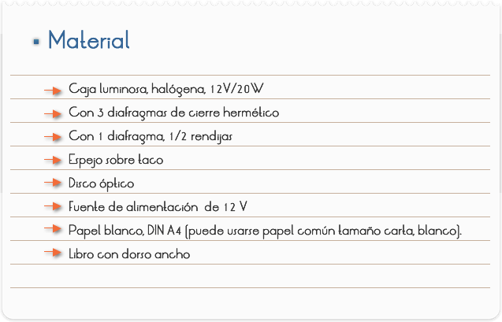

Introducción
REFLEXIÓN DE LA LUZ
La luz tropieza con la superficie de un cuerpo cualquiera, es difundida parcial o totalmente en todas las direcciones posibles. No ocurre lo mismo cuando la superficie del cuerpo está totalmente pulimentada. Entonces, la superficie devuelve el luminoso en una dirección única que depende de la posición rayo con respecto a está superficie: se dice que el rayo se ha reflejado, y que la superficie reflectora es un espejo. La forma sencilla de los espejos es de un plano. La naturaleza nos ofrece un ejemplo en la superficie de los lagos o de las aguas tranquilas, y el hombre, desde la épocas más remotas, ha construido espejos de metal pulimentado. Mucho más tarde se fabricaron espejos de vidrio o de cristal, que reflejaban la luz mediante una a de amalgama de estaño (estaño disuelto en el mercurio, estaño de los espejos) y solamente hace menos de un siglo se ha reemplazado el estaño por una capa delgada de plata depositada por vía química.
Es sabido que los cristales o espejos planos producen, de los objetos situados delante de ellos, imágenes semejantes a dichos objetos. Estudiando el mecanismo de formación de estas imágenes llegaron los sabios de la Antigüedad al descubrimiento de las leyes de la reflexión, que se encuentran ya formuladas, por ejemplo, en el tratado de Euclides: La Catóptrica (300 años antes de J.C., aproximadamente).
IMAGENES PRODUCIDAS POR UN ESPEJO PLANO.
Tracemos un círculo y diámetro en un plano horizontal y dispongamos después verticalmente un espejo no plateado a lo largo del diámetro. Tomemos después dos bujías del mismo diámetro y de la misma longitud, una de las cuales se colocará en el círculo ante un espejo, que nos dará, por reflexión, su imagen. Procuremos entonces colocar la segunda bujía de forma que se superponga a la imagen observada en el espejo, lo que se logrará después de algunos tanteos, con tanta exactitud, que será imposible distinguir la segunda de la imagen de la primera. La ilusión es tan perfecta que si se enciende la bujía situada ante el espejo, la segunda parecerá también encendida y el dedo que toca la mecha parecerá situado en la llama.
Cuando se ha obtenido esta coincidencia entre la segunda bujía y la imagen de la primera, se comprueba que la bujía número dos está también situada en el circulo, en la intersección de la perpendicular trazada desde la bujía numero no sobre el diámetro. Esta disposición es sólo la simetría con respecto a un plano - el espejo - que se estudia en geometría. Se observa, además, que las distancias de las bujías al espejo son iguales, y que la imagen es también igual al objeto.
Dicho de otra forma, los rayos luminosos, después de reflejados por un espejo plano, parecen proceder de puntos del espacio situados detrás del espejo y simétricos del objeto. Un rayo luminoso trazado desde el punto A que llega al espejo M en el punto I se refleja según IR, como si viniera del punto A', sobre la perpendicular AH, tal como A'H = AH.
Objetivo
Estudiar si hay relación entre la dirección del haz de luz que incide en un espejo plano y la dirección del haz reflejado
Estudiar como colocarías una hoja de papel para ver en toda su longitud el haz reflejado

Dirección de los haces de luz incidente y reflejado.
1) Coloca el disco graduado, llamado "disco óptico", sobre la hoja de papel, como se indica en la figura 2)
2) Escribe 0º en la hoja, junto a la línea horizontal, y marca sobre esta hoja también otros ángulos (figura 1).
3) Coloca el espejo plano en el centro del disco, exactamente sobre la línea vertical.
4) Coloca el diafragma de un rendija en la caja luminosa, en el lado de la lente.
5) Conecta la caja luminosa a la fuente de alimentación (12V-).
6) Coloca la caja luminosa de forma que el haz de luz estrecho incida en el espejo exactamente con un ángulo de 60º (figura 1).Cuida que el haz de luz de la caja luminosa incida exactamente en el punto de intersección de las Líneas del disco óptico.
7) Lee el ángulo del haz de luz reflejado.
8) Este es el ángulo (ángulo de reflexión) entre la línea 0° (llamada normal al plano de incidencia) y el haz reflejado; mira también la figura 1.
9) Anota su valor en la tabla 1; repite este experimento con todos los ángulos de incidencia dados en la tabla, y otros tres ángulos tu elección. Anota todos los valores medidos en la tabla.
10) Haz finalmente incidir la luz a lo largo de la Línea 0° (la normal al plano de incidencia). Observa el haz reflejado; ¿qué valor tiene ahora el ángulo ? Anótalo también en la tabla.
11) Desconecta la fuente de alimentación.
Posición de los haces de luz incidente y reflejado
1) Cambia el montaje del experimento conforme a la figura 2.
Para esto dobla una hoja de papel por la mitad y colócala sobre un libro grueso, de modo que el doblez coincida con el borde del libro. El espejo está en la parte inferior de la hoja, coincidiendo con el doblez y el borde del libro.
2) Conecta de nuevo la caja luminosa (con el diafragma de una rendija en el lado de la lente) a la fuente de alimentación (12V), y colócala sobre la hoja de papel y el libro, como en la figura 2.
3) Haz que incida oblicuamente sobre el espejo un haz de luz estrecho, de modo que el punto de incidencia sobre el espejo esté unos 2 cm. delante del doblez de la hoja (figura 2).
4) Observa el haz de luz reflejado. Mueve la otra mitad de la hoja con cuidado hacia arriba (hasta 90°) y hacia abajo, sin que el espejo se mueva.
¿Qué observas con respecto a la visibilidad de toda la longitud del haz de luz reflejado en esta mitad de la hoja de papel?
Anota tus observaciones, desconecta la fuente de alimen¬tación y quita la caja luminosa del papel.
RESULTADOS Y CONCLUSIONES
Dirección de los haces de luz incidente y reflejado
Posición de los haces de luz incidente y reflejado:
4) Visibilidad del haz reflejado: papel horizontal
5) Mitad de la hoja levantada
6) Mitad de la hoja bajada
De los resultados obtenidos:
Compara los valores de los ángulos de reflexión de la tabla 1 con los ángulos de incidencia . ¿Qué puedes comprobar? Formula un enunciado.
5) ¿Cómo se refleja un haz que incide sobre el espejo sobre la línea 0º (la normal al plano de incidencia)? ¿Cuáles son, en este caso, los ángulos de incidencia y de reflexión?
6) ¿En qué posición del papel (2ª parte del experimento) se ve el haz de luz reflejado con la mayor claridad y en toda su longitud?
7) ¿Qué conclusión puedes sacar de esto, sobre la posición relativa de los haces de luz incidente y reflejado (y la normal al plano de incidencia)?
8) ¿Por qué se puede ver con un espejo detrás de una esquina?
9) ¿En qué momento del día y en qué posición del sol se ve brillar la ventana de un edificio lejano, y por qué no en otro momento?
Comentarios